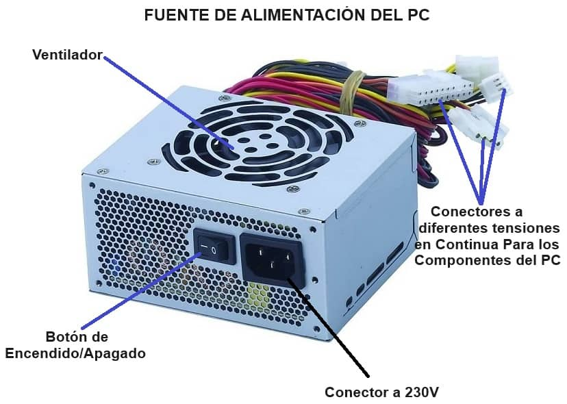
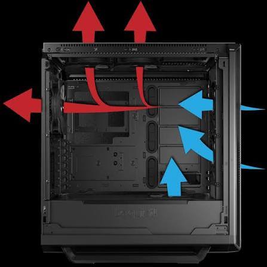

Investigación: Energía y Flujo de Aire
1. Fuente de Alimentación (PSU)

Conversión de Energía: La fuente cumple la función crítica de transformar la Corriente Alterna (AC) de la red eléctrica (que oscila en ciclos) a Corriente Continua (DC) de bajo voltaje (12V, 5V, 3.3V), que es la única que los transistores de la PC pueden utilizar sin dañarse. Certificación 80 Plus: Este es un mito común: 80 Plus NO mide la calidad de los componentes. Solo certifica la eficiencia energética, es decir, qué porcentaje de energía de la pared se convierte efectivamente en energía para la PC vs. cuánta se desperdicia en forma de calor. Una fuente con 80 Plus Gold puede tener componentes baratos y fallar, mientras que una sin certificación podría tener componentes premium (aunque es raro). Protecciones Eléctricas: Son el "seguro de vida" de tu PC.- OVP (Over Voltage Protection): Corta la energía si el voltaje sube por encima de un límite seguro.
- SCP (Short Circuit Protection): Apaga la fuente instantáneamente si detecta un cortocircuito.
2. Gabinete y Flujo de Aire

Funcionalidad vs. Estética: El gabinete no es solo una caja; es un chasis de ingeniería que protege los componentes contra daños físicos, reduce el ruido electromagnético, organiza el cableado para no obstruir el paso del aire y proporciona el soporte estructural para los componentes pesados (como la GPU). Dinámica de Fluidos (Airflow): El aire debe fluir como un río: fresco desde el frente y abajo, caliente hacia atrás y arriba. Presión Positiva: Se logra cuando metes más aire del que sacas (ej: 3 ventiladores entrando, 1 saliendo). Al haber más presión dentro, el aire intenta escapar por todas las ranuras, evitando que el polvo entre por orificios sin filtro. Es la mejor forma de mantener el equipo limpio.